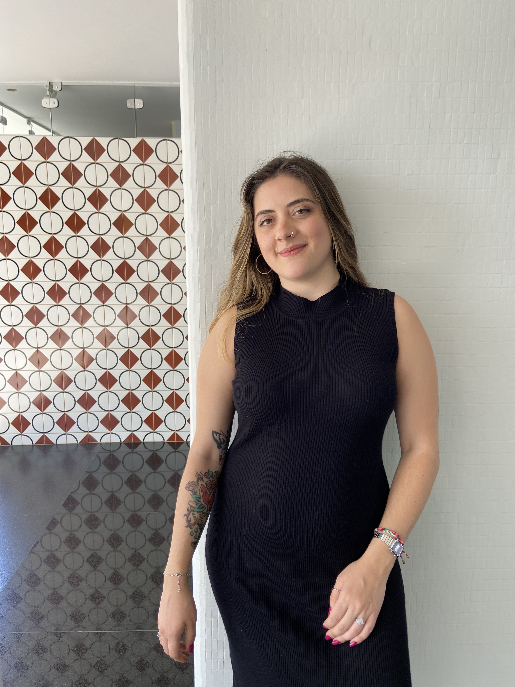
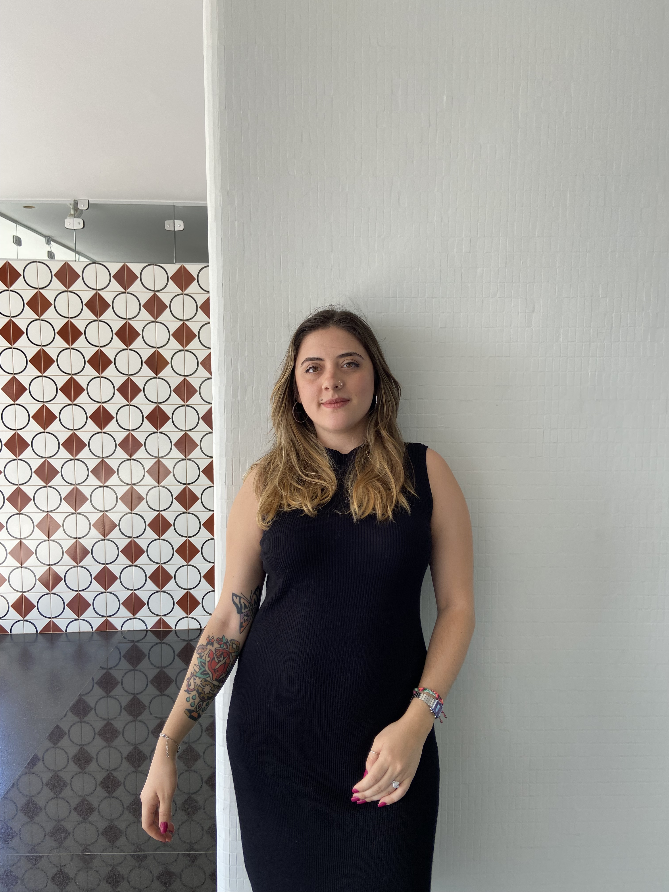
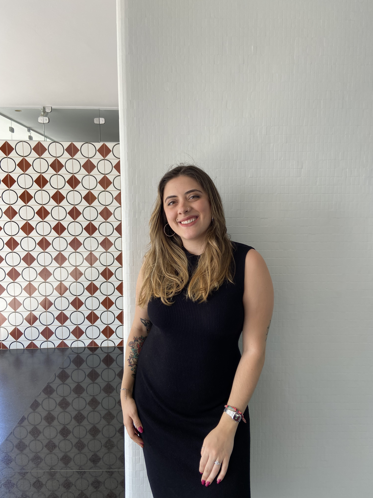
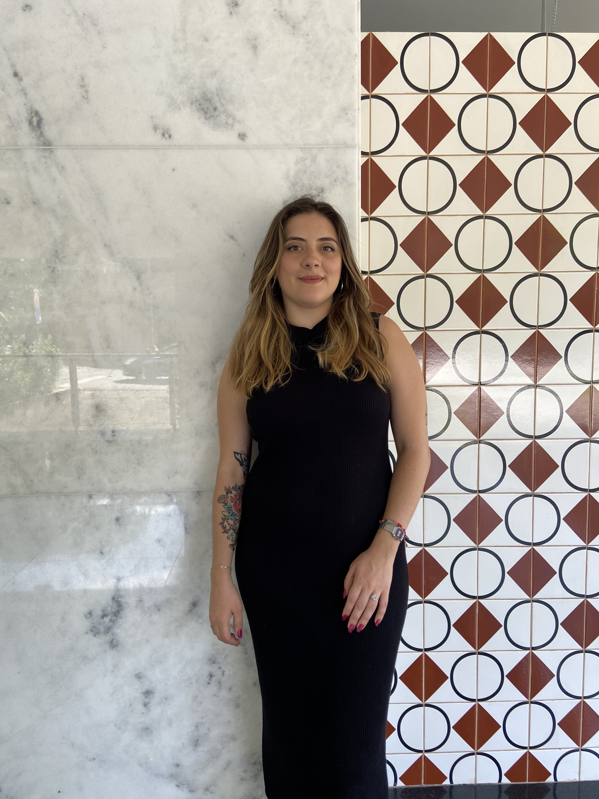

Um espaço de escuta e acolhimento
Muitas pessoas chegam até aqui enfrentando momentos de transição, instabilidades, sobrecarga emocional ou a sensação de estarem desconectadas de si mesmas.
Estou aqui para ajudar você a reconstruir a confiança em si mesma e a nutrir relações mais saudáveis, num ambiente onde você pode explorar suas emoções sem julgamentos. As dores mais profundas encontram cura quando podemos compartilhá-las da forma mais autêntica possível.
Juntas, vamos abrir espaço para o que está emergindo na sua vida agora e transformar a forma como você enxerga sua própria história.
Meus Serviços
Ofereço um espaço cálido e empático para navegar por transições de vida, esgotamento emocional e desafios nos relacionamentos. Juntas, trabalharemos para reconectar você com as suas motivações e afetos mais essenciais.
Apoio para
Transições
de
Vida
Acompanhamento em momentos de grande mudança de rotina, papéis, luto ou processos de migração, estabelecendo uma âncora emocional.
Relacionamentos
Complexos
Para quando você sente dificuldade em se posicionar, lida com conflitos ou sente que está sempre sobrepondo as demandas dos outros às suas.
Burnout e
Sobrecarga
Auxílio na navegação pelo cansaço extremo, perda de sentido ou sobrecarga no trabalho, resgatando a vitalidade no dia a dia.
Venha exatamente como você é.


Minha Abordagem
Muitas pessoas com que eu trabalho enfrentam mudanças profundas, momentos de ruptura, desilusão amorosa ou uma sensação constante de que falta algo. Frequentemente, elas se deparam com dúvidas sobre quem são de verdade e o que desejam para o futuro.
Estou aqui para ajudar você a se reconectar consigo mesma e construir ferramentas robustas de autoconfiança e autocuidado. Seja o nosso encontro na modalidade online ou presencial.
Juntas, vamos observar pensamentos arraigados e defesas que, embora úteis no ado, hoje já não fazem sentido para quem você deseja ser. Com a expansão da consciência, pavimentamos de forma afetuosa novos caminhos de adaptação e mudança para o seu bem-estar.
Minha base é a Psicologia Humanista, honrando a sua experiência, a sua história singular e voltando o nosso olhar para a capacidade de cura e de desenvolvimento que existe organicamente dentro de você.
Ser ouvida com verdadeira abertura, em especial nos cantos onde nos sentimos mais vulneráveis, inseguros, confusos ou assustados, é um ato transformador de coragem, liberdade e reparação.
FAQs
Às vezes é difícil iniciar um processo tão íntimo quanto a terapia. Aqui você encontra respostas sobre o aconselhamento e como funcionam as sessões comigo.
Contato
